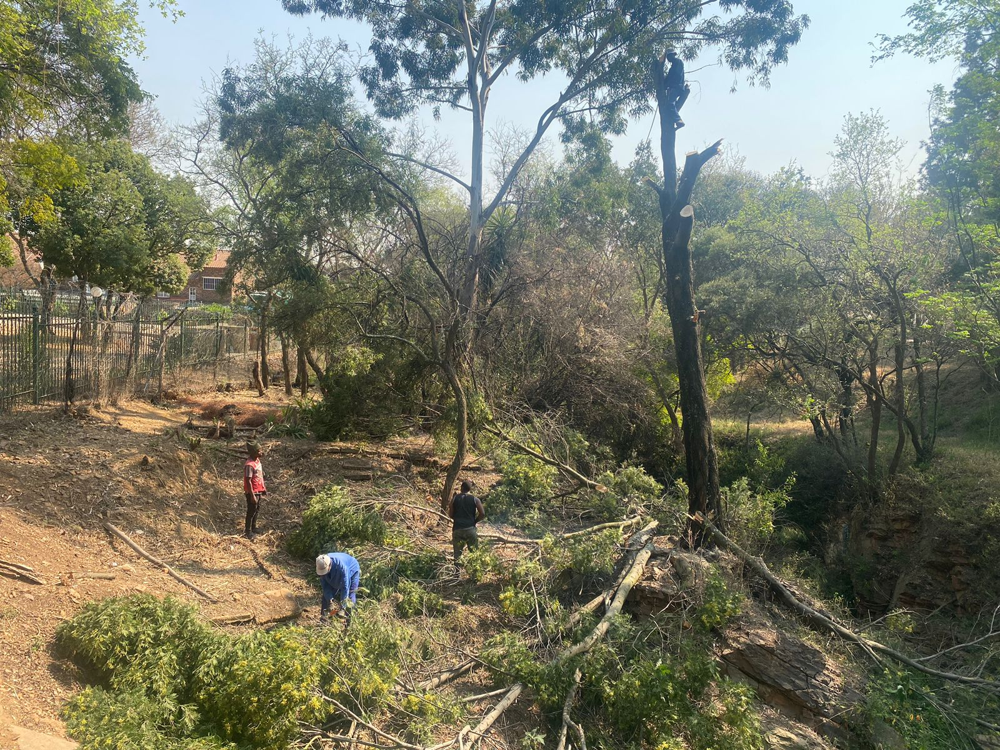
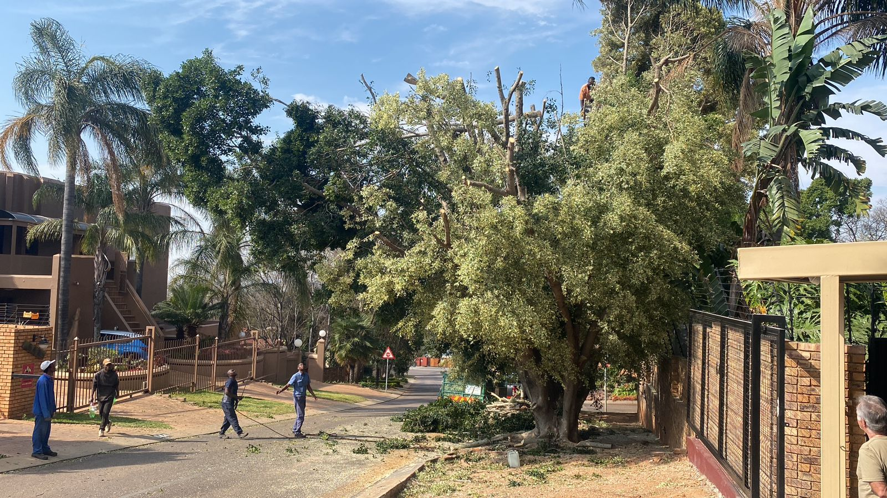
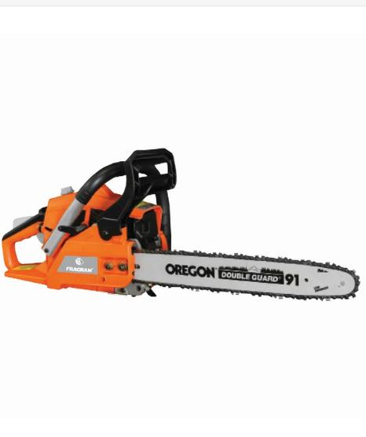
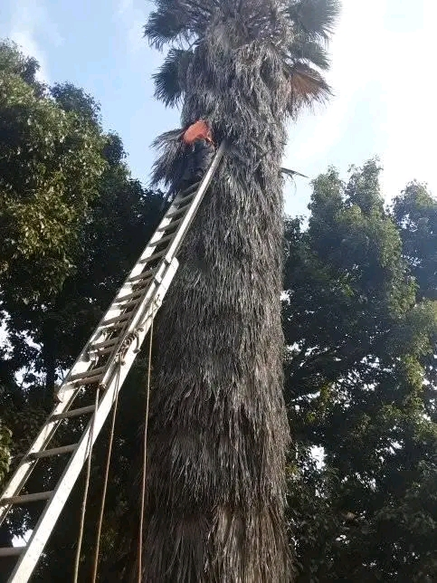
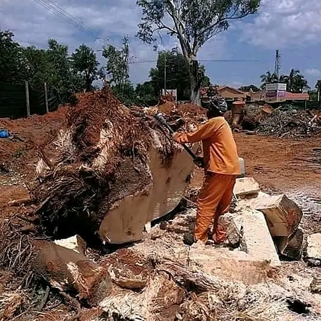

With years of seasoned expertise in tree felling, cutting, shaping, and removal, Mukanya Tree Felling Services stands as a trusted name in Kempton Park and the surrounding areas of Gauteng and Johannesburg, South Africa. Our commitment to professional service and precision in arboriculture sets us apart in the industry.

At Mukanya Tree Felling Services, we understand the importance of trees in our environment and the safety concerns that can arise when they need maintenance or removal. Our team of experienced arborists and tree specialists bring a wealth of knowledge and skills to every project, ensuring the highest standards of care and expertise.

From carefully planned tree felling to meticulous tree shaping, our focus on safety and efficiency remains unwavering. We utilize advanced techniques and industry-best practices to handle tree services, whether it's a large-scale tree removal or intricate shaping to enhance the beauty and health of your green spaces.

Customer satisfaction is at the heart of what we do. We work closely with our clients, offering personalized solutions tailored to their specific needs and the unique requirements of their property. Our aim is not just to meet expectations but to exceed them, delivering exceptional service and results that stand the test of time.

At Mukanya Tree Felling Services, we prioritize safety, professionalism, and environmental consciousness in every job we undertake. We take pride in our ability to preserve the beauty of nature while providing reliable and expert tree care services.
Thank you for considering Mukanya Tree Felling Services for your tree maintenance and removal needs. Partner with us for reliable, professional, and environmentally conscious solutions for your trees and landscapes.

Feel free to incorporate any specific details that reflect Mukanya Tree Felling Services' values or unique approach in the industry!